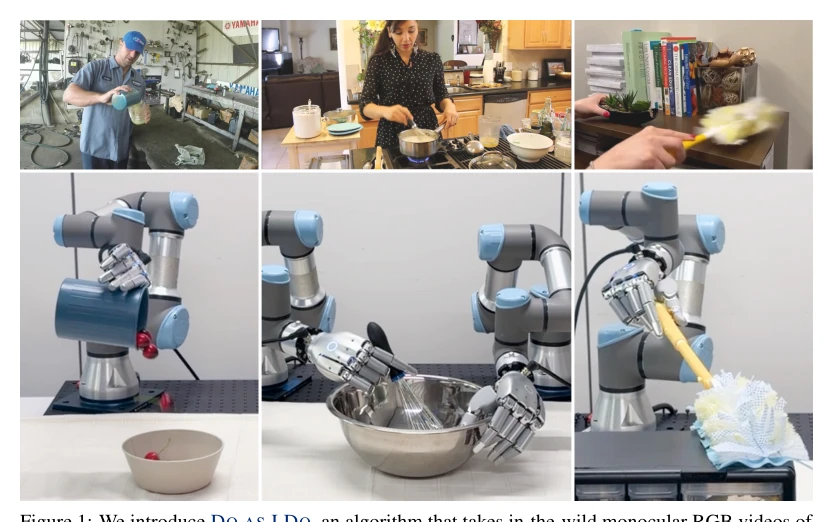
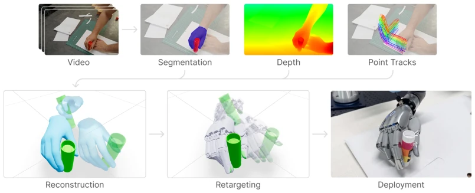
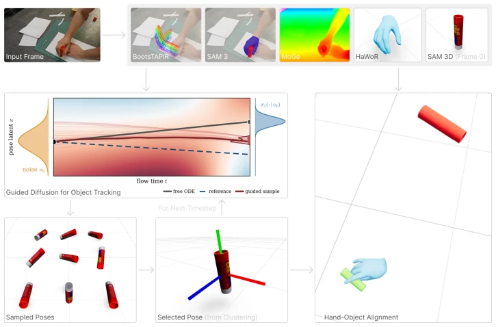
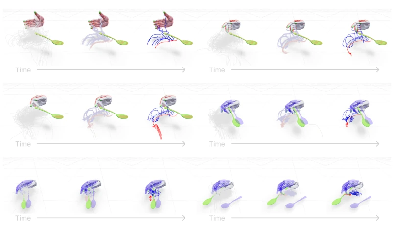
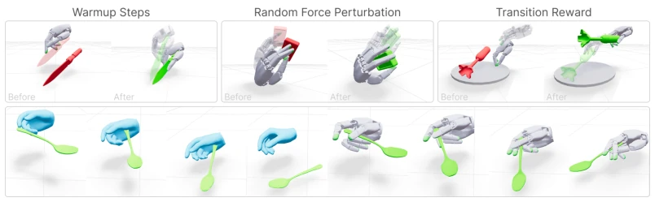
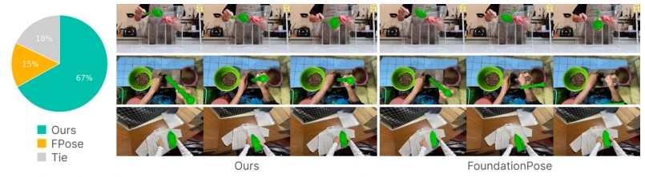
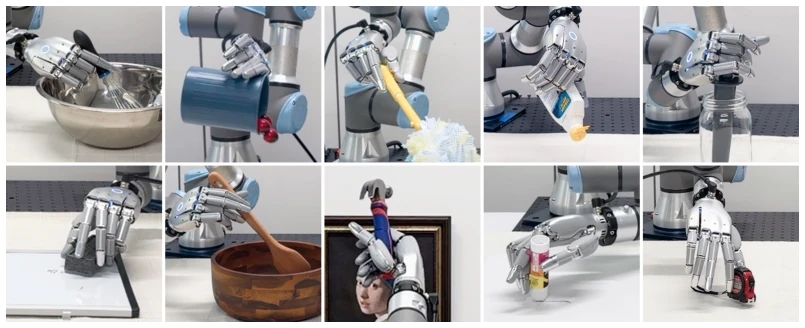
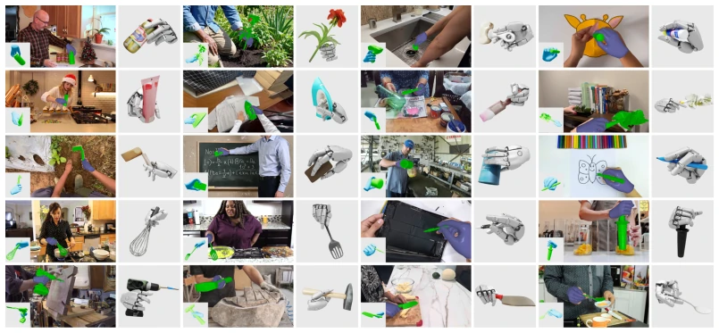
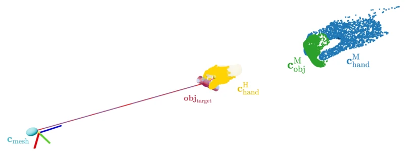
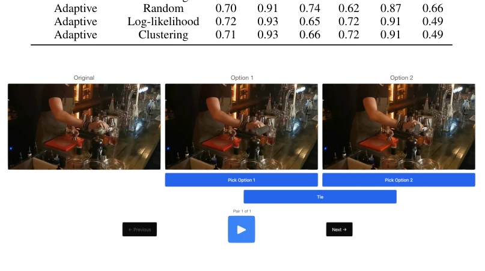

Do as I Do: Dexterous Manipulation Data from Everyday Human Videos
Bhawna Paliwal, Haritheja Etukuru, William Liang, Pieter Abbeel, Nur Muhammad Mahi Shafiullah, Jitendra Malik abspdf
论文点评Review
这篇论文试图把互联网上的随手拍视频变成机器人能用的灵巧操作数据，野心不小。核心贡献在于把“看”和“做”的鸿沟填平了一部分，但别指望它能处理软体或复杂场景。最扎心的是他们自己算的，网上视频 95% 都是废片，这数据清洗成本比训练模型还高。不过，在单目 RGB 下做 4D 重建和动力学重定向确实有 SOTA 表现，算是给“从视频学机器人”这条赛道加了块砖，虽然这块砖可能有点重。
This paper attempts to transform casual videos on the internet into dexterous manipulation data usable by robots, which is quite ambitious. The core contribution lies in bridging the gap between "seeing" and "doing" to some extent, but do not expect it to handle soft bodies or complex scenes. The most striking point is their own calculation: 95% of online videos are junk footage, meaning the data cleaning cost is higher than training the model. However, performing 4D reconstruction and dynamics retargeting under monocular RGB indeed shows SOTA performance, counting as adding a brick to the track of "learning robots from video", although this brick might be a bit heavy.
研究动机Motivation
机器人学习缺数据，真机遥操作太贵太慢 [16]，仿真环境设计又太复杂。现有方法大多依赖深度相机或动作捕捉 [7, 15]，但互联网上全是单目 RGB 视频。如何从这些 noisy 视频中提取可执行的 3D 手物交互，是跨越人机具身差距的关键。之前的工作要么假设特定行为，要么依赖干净数据，无法利用海量非结构化视频。本文旨在解决这个“观测”到“体验”的转化难题，让机器人能像人类一样通过观察视频来学习。
Robot learning lacks data; real teleoperation is too expensive and slow [16], and simulation environment design is too complex. Existing methods mostly rely on depth cameras or motion capture [7, 15], but the internet is full of monocular RGB videos. How to extract executable 3D hand-object interaction from these noisy videos is key to bridging the human-robot embodiment gap. Previous work either assumes specific behaviors or relies on clean data, unable to utilize massive unstructured videos. This paper aims to solve this "observation" to "experience" conversion difficulty, enabling robots to learn by observing videos like humans.

Figure 1: We introduce DO AS I DO, an algorithm that takes in-the-wild monocular RGB videos of hand-object interaction (top) and generates dexterous hand manipulation data (bottom).
方法Method
整体流程分为 3D 重建与动力学重定向。重建阶段，利用 HaWoR 进行手部跟踪，结合 SAM 3D 生成物体 3D 网格。核心创新在于将 SAM 3D 改造为视频跟踪器，采用引导扩散机制：固定锚帧形状，利用流匹配（Flow Matching）ODE 积分更新姿态，并引入自适应引导参数 αp 根据物体旋转速度动态调整，避免姿态抖动。姿态采样后通过 SE(3) 距离聚类筛选最佳候选。重定向阶段，基于 MPPI 采样优化，针对重建轨迹的噪声设计了三项改进：Warmup 步骤在仿真中预置物体悬空状态，让机械臂先调整姿态再接触；随机力扰动模拟环境干扰，提升控制鲁棒性；过渡奖励项惩罚抓取失败，确保接触状态转换正确。最终在 Mujoco Warp 仿真器中生成物理可行的轨迹。
The overall process is divided into 3D reconstruction and dynamics retargeting. In the reconstruction phase, HaWoR is used for hand tracking, combined with SAM 3D to generate object 3D meshes. The core innovation lies in transforming SAM 3D into a video tracker, adopting a guided diffusion mechanism: fixing the anchor frame shape, using Flow Matching ODE integration to update poses, and introducing an adaptive guidance parameter αp to dynamically adjust based on object rotation speed to avoid pose jitter. After pose sampling, SE(3) distance clustering is used to filter the best candidates. In the retargeting phase, based on MPPI sampling optimization, three improvements are designed for the noise in reconstructed trajectories: Warmup step pre-sets object suspension state in simulation, letting the manipulator adjust posture before contact; random force perturbation simulates environmental interference, improving control robustness; transition reward term penalizes grasp failure, ensuring correct contact state transition. Finally, physically feasible trajectories are generated in the Mujoco Warp simulator.

Figure 2: Method Overview. Our method leverages vision foundation models to reconstruct the hand and object, and retargets them onto the robot via sampling-based optimization in simulation.

Figure 7: Reconstruction Architecture. SAM 3D [11] generates the object mesh from a single frame, while HaWoR [45] tracks the hand across the video. We then track the object frame-by- frame via guided diffusion (Section 3.1), anchoring each step to the predicted object shape and the previous frame’s pose. Per frame, we sample N candidate poses and select the best using a clustering-based heuristic. Finally, a depth-map-based alignment step registers the HaWoR hand to our predicted object, yielding a consistent 4D hand-object trajectory.

Figure 9: Retargeting Optimization. We visualize multiple iterations of the sampling-based opti- mization process for a trajectory: blue and red traces indicate converged fingertip and object trajec- tories, respectively. The ghost hand and object indicate reference (blue) and warmup (red).
On DexYCB and HOI4D benchmarks, reconstruction metrics (F-5, F-10, Chamfer) all surpass SOTA methods like FoundationPose. In the In-the-wild 150 videos human preference test, over 70% believe this method is better. Retargeting task success rate reaches 81% on OakInk2 dataset and 71% on self-built reconstruction dataset, significantly better than baseline. Real-world deployment of 500 trajectories, using Sharpa Wave dexterous hand and UR3e manipulator to execute 10 tasks. Additionally, authors analyzed 100DOH dataset, finding only 4% videos contain valid interaction, revealing the huge challenge of network data cleaning. Ablation experiments confirm Warmup and perturbation are crucial for improving success rate.

Figure 4: Retargeting. Our method succeeds in common failure modes (top) and excels at handling noisy references (bottom), despite, e.g., incorrect depth estimation causing poor alignment.

Figure 5: Object Tracking Comparison. We compare Ours and FoundationPose [17] for object tracking with head-to-head human evaluations on 150 videos (left), and visualize samples (right).

Figure 6: Real-World Deployment. We showcase trajectories for 10 tasks: whisking, pouring, dusting, squeezing, tamping, erasing, stirring, hammering, spreading, and picking.
其他图片Other Figures

Figure 3: Verbs and Objects. We visualize 20 distinct actions from our pipeline: placing, pick- ing, scrubbing, spreading, squeezing, ironing, painting, dusting, digging, erasing, pouring, writing, whisking, stirring, poking, tamping, drilling, hammering, cutting, and basting.

Figure 8: Hand-Object Alignment. The translation and scale of the object mesh are converted from MoGe pointmap space to HaWoR hand mesh space using relative distance between hand and object.

Figure 10: A screenshot of the user interface shown to the human evaluators for in-the-wild object tracking. In this instance shown in the figure, option 1 is regarded as better because the object pose is aligned with true object position.